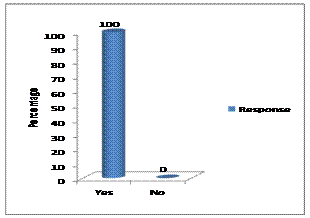
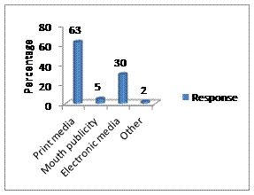
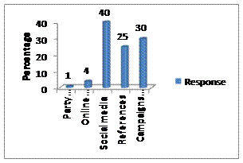
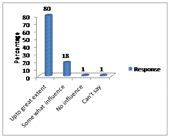
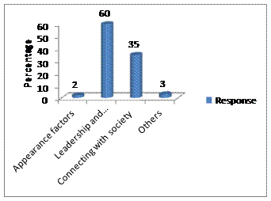
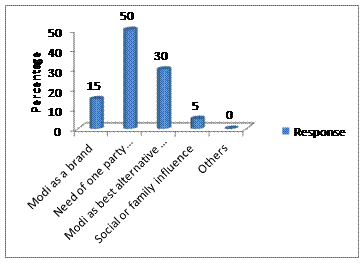
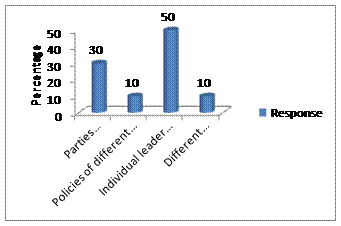

Paper Title :
TO STUDY THE CHARACTERISTICS OF BUILDING BRAND MODI ON VOTERS IN THE GENERAL LOKSABHA ELECTION 2014
A STUDY WITH REFERENCE TO NAINITAL DISTRICT OF UTTARAKHAND IN INDIA
Abstract
In this study political parties can be viewed as brands. And politicians were the products. All, of them, segments markets, and then try to target them
Author
Ms. Yogita Bhatt
MBA Student, Department of Management Studies
Kumaun University, Campus Bhimtal
Bhimtal, Uttarakhand
INDIA
Paper Transcript of Paper Titled :
To study the characteristics of building brand Modi on voters in the general loksabha election 2014
A Study with reference to Nainital District of Uttarakhand in India
Ms. Yogita Bhatt
MBA Student, Department of Management Studies
Kumaun University, Campus Bhimtal
Bhimtal, Uttarakhand
Abstract—In this study political parties can be viewed as brands. And politicians were the products. All, of them, segments markets, and then try to target them.
Keywords-branding, elections, marketing, brand building,
Introduction
Brand was a customer experience represented by collection of images and ideas. Or it basically refers to symbol as- name, logo, slogan, design. It has one strategic purpose and that was to differentiate itself from competitors.
In this study political parties can be viewed as brands. And politicians were the products. All, of them, segments markets, and then try to target them. They have different strategies for different segments, where some fail and some succeed. BJP, congress, BSP, AIADMK, JD, etc were considered as brands in the report. These were the competing brands fighting for one goal. They have various products wiz the politicians. BJP was formed in 1951 under leadership of Dr.Syama Prasad Mukherjee. They have the philosophy of Integral Humanism and Hindutva. BJP had formed government in central for 3 times till now. It was the biggest opposition party currently. Under the nurturing of umbrella BJP there was a rise of a product that becomes a brand of its own. And that powerful sub-brand was – “MODI” who became CM of one of the richest state of India- Gujarat, on October 2001 after Keshubhaipatel resigned. Modi was re-elected on December 2002 with 126 seats out of 182. Modi says security and development was complementary and women, youth, tribal and fishermen included in marketing segment. Market targeting addressed all women rallies in which he talked about reduction in women infanticides, increase in women literacy. There was Tribals and fishermen- Vanbandhuyojna and Sagarkheduyojna. Also launched Vanthanbhi Vikasyatra to gauge the mood of rural population and image was development or hindutva! Both these issues helped alot. But it was more because of development work Modi has taken. The state CM could very well be on his way to become the next PM. But there were various hurdles get to be tackled with.
Literature Riview
BS Reporter (2014) said that "SMEs must understand the importance of branding. Now, branding was not only restricted to advertising for television, print media or radio. SMEs must promote its products through social media which was very effective. It was centered on the objectives of knowledge-sharing and the best practices to enhance competitiveness of the small and medium entrepreneurs in association with Business Standard.
A K Bhattacharya (2014) the new government would do well to concentrate on framing its own agenda for action, instead of looking back to review decisions that its predecessor had taken. The new government would do well to concentrate on framing its own agenda for action, instead of looking back to review decisions that its predecessor had taken. There would naturally be a lot of pressure on it to review many such decisions. That exercise may be necessary in many cases, but the new government would be ill-advised to concentrate all its energy on such actions. Leadership, after all, was not about changing whatever was done in the past; it was about charting a new path for growth and development.
While elaborating importance of branding and social media Kakkar (2014) said," Social media was very cost effective as compared to other advertisement mediums”. Social media has become a platform for personalized engagement with SMEs. Branding can contribute in this area significantly. This was a smartest way to engage with the target community. The capability of social media was immense for SMEs. As they can target their potential markets according to the regional specifications.
Vinay Umarji & Premal Balan (January 1, 2014) said that brand 'Namo' was finding its place in day-to-day utilities like stainless steel utensils to sweets.
The objective behind this was to support Modi and this has nothing to do with business.
'The Namo Store', the portal will have products that will carry both a utility and a social message surrounding Modi. They believe in the values and vision to bring in, such as the 'India First' attitude. Through this they are developing products for old age people.
BS Reporter on January 13, 2013 With Vibrant Gujarat Summit 2013 focusing on development of small and medium enterprises (SMEs) in Gujarat, chief minister Narendra Modi encouraged entrepreneurs to come together and create a ‘Made in Gujarat-India’ brand for products manufactured by SMEs.“We have to create a brand of ‘Made in Gujarat-India’ on the lines of ‘Made in Japan’. The brand creation would represent state SMEs and assure good quality and credibility,” said Modi. To meet the manpower requirement of industries, the state government will also set up skill development centers close to industrial clusters. The government was also looking to make changes in the academic syllabus for the institutes and universities.
Research Methodology
Objectives
- To study Modi’s personality’s link with society.
- To study branding strategy of Modi.
- To study how Modi uses social media to create his brand.
- To study the characteristics of building brand Modi on voters in the general loksabha election 2014.
Methodology
- An exploratory research was carried out regarding Modi, in which everything was clearly define. No vague ideas or statement were used. The questionnaire was circulated among the various people of Bhimtal ,so that their responses can be achieved to conduct the study. In that questionnaire certain close ended questions and one open ended question were asked to the respondents. Likert scale was also used in the research study. Pirot study was conducted among the 10 respondents on a trial basis. Then the questionnaire was reframed and was distributed among the final respondents.
Data Collection
Data were the facts, and other relevant materials, past and present, serving a basis for the study and analysis. The data serve as a base or raw material or analysis. Without an analysis of factual data, no specific inferences can be drawn on the questions under the study. The relevance, adequacy and reliability of data determine the quality of the findings of a study.
Sampling Method
For this research work researcher have selected Non- Probability Convenience Sampling. Samples were chosen according to the convenience of researcher. So the study area selected was Bhimtal. Other than this time limit for the completion of the work was limited.
Limitation of the study
Time was the biggest limitation while carrying the project.
Study was limited to only 100 respondents.
Study was limited to Bhimtal region only.
Data Anyalysis & Interpretation
Are you aware of brand Modi

DATA INTERPRETATION- All selected respondents were aware of brand Modi because of distinct marketing strategies used by BJP members in highlighting brand Modi. The marketing strategies used by BJP members were related to social media, print media, electronic media, etc, as today all people were aware of all these marketing tools and were using it to get aware.
Through which medium you are aware about Modi Brand?

DATA INTERPRETATION- Over 63% of selected respondents were aware about brand Modi through print media because it was the cheapest source as compared to other medium as it includes- newspapers, journals, magazines, etc. other 5% respondents were aware through mouth publicity and 30% respondents through electronic media were aware because some of the people get to know about him through television, radio and internet too. And remaining 2% were aware through other medium of source.
Which tool of brand Modi has created his position in your mind?

DATA INTERPRETATION- The biggest tool that created the position of Modi in the respondant’s mind was social media as today all were in touch with social sites like facebook, twitter, wats app, etc and were using it. So 40% respondant’s created get the position of brand Modi in their mind through social media, and 30% respondant’s through the campaigns and railles conducted by BJP members to create positioning of brand Modi in people’s mind and 25% respondant’s mind through references. Online advertisement was also one of the tool to create brand Modi’s position in people’s mind and over 4% respondents get aware of Modi through this tool. Lastly 1% respondant’s created Modi’s position in their mind through party manifesto tool
Is this tool used by him created a posititve influence on you?

DATA INTERPRETATION- About 80% of respondents were positively influenced by Modi upto great extent. This was because of his distinct personality as compared to others, the distinct tool used by his members to market brand Modi and about 18% of respondents were some what influenced of him. And 1% was not influenced of him at all because may they were not interested and 1% said that they can’t say about his influence on them.
Which personal factor of Modi has created him brand for you?

DATA INTERPRETATION- According to 60% of respondents said that Modi’s leadership and administrative style personal factor made him a brand for them. It’s because his personality, attitude regarding things, and his capacity of managing different issues etc, created him. Thus his administration in Gujarat created his image in people’s mind. 35% respondents said his connection with society through social sites like facebook, twitter, writing blogs make him a brand for people. 2% were in favour of his appearance like his dressing sense, looks etc. at last 1% said other factors
What makes you to cast your vote in general election 2014?

DATA INTERPRETATION- 50% of respondents said that need of one party government was the factor due to which they had cast their vote in general election 2014. They said this because our country was in need of a party that may govern the policies, procedures as set in our country or may change or modify it as per the need of system. 30% of respondents said that they had cast their vote in general election because they found Modi as the best alternative against the available option or against the other leaders of other parties. This was because Modi has created its distinct brand as compared to other leaders, by which people get influenced so much that they found no other alternative available as compared to Modi. 15% of them cast their vote due to the brand image of Modi. 5% of them cast their vote because of social or can say family pressure. No one was in favour of other factors source. It was 0% in other factors
Which facot of genearl elections2014 are significant in vote casting decision?

DATA INTERPRETATION- 60% of respondents said that individual leader against opponent leader was one of the factor that was significant in vote casting decision. As their should be atleast two opponent parties standing against each other and of which people have to choose their one leader.30% of them said that parties performance against opposition parties was the factor that was significant in vote casting decision. Means the best performer will be given vote by people during vote casting decision. 10% of them said policies used by different parties were the factor that was important in casting your vote. Lastly, 10% of them said that different traditional strategies of parties were the factor that was significant in casting your vote.
What are the factors in your opinion has created brand Modi in election 2014?
DATA INTERPRETATION-Respondents had given many factors that created a brand Modi. Among them respondents were very much influenced by his leadership style, he was a visionary leader which was required for our country. Other than this were reflection of his commitment towards his responsibilities, positive attitude, Gujarat model were also factors which created the brand Modi image.
FINDINGS
- Media utilisation was done strategically.
- Modi utilises his speech in such a order, that news reporter have given publicity parties by commenting on him.
- He has identified as a part of society by the voters as he has been working as a chaiwala in his career and had used this occupation as a tool to get linked with common mass of India.
- ”Saugandh is mitti ki” this was the phrase which kept Modi connected with the society.
- His usage of local language by Modi in addressing public under the tool, to get linked with the society.
- There was a proper and appropriate media selection by Modi in creating the market for himself.
- By good product and by Modi’s great speech the researcher find out that there will be effective sale.
- The researcher also find out that, Its about playing smartly the game instead of spending cores on the advertisement.
- Reserarcher also find out that its about being creative at your part like Modi uses youtube, twitter, facebook addressing about his rallies, any events etc. He was the first Indian politician to make an address on google hangout.
- It was also find that its about delivering right brand values by the marketor at right time and also at right place.
- Researcher also find out to practice your preach alter the thoughts from time to time.
- Respondents were influenced by brand Modi.
- This brand image had crossed the all barriers of caste and ages i.e. all respondents were influenced by Modi’s image.
- Media had played a great role in creating brand Modi.
- It was seemed that Modi’s leadership was very much required for the nation.
- Researcher find out the characteristics of building brand Modi on voters in the general lokhsabha election 2014 had a great impact and positively influenced voters to cast their vote for him.
Conclusion
This project was helpful in proving the in differentiation between the Modi and brand Modi. Through this we got to know that Modi can be hawked in the political market as a product that provides high yields over short and long terms. He was a super performing product who embodies power, precision and aggression. Modi as from a very poor family and from his journey from tea seller up till now had set a great example for all of us that if a person decides to achieve something then by their hardwork, smart skills can achieve it. Modi had assured people to bring good governance in the country by using certain strategies and policies framed by him and also by his team member’s good performance. A savvy marketer with a sense of humour, a decisive administrator, a non-negotiable commander, a believer of innovation, a progressive reformist, Brand Modi was a little bit of everything. Whether he emerges as the brand of choice was something the nation will get to see on May 16.
The general election commission brought a drastic change in the loksabha election by different mode of casting votes to the parties. Through this Modi has come up in the eyes of society and also in news and grap the publicity. And there was a unipolar voting towards one candidate. People as coming all over the caste, creed, sex, ratios has given one party winning. In this election 2014, the voting ratio has increased and changed the youth mentality and their thoughts. Modi has successfully created the positioning of his image in minds of voters which has created a Brand for Modi from Modi.
References
http://en.wikipedia.org/wiki/Election_Commission_of_India
https://vistamind.com/uploads/VistaCareer/VistaCareer_April2013.pdf
www.slieshare.net/amanraj2/5
www.slideshare.net/deepaksrms/narendraModi-promotional-campaign
intelliassist.in/blog/narendra-Modi-the-pied-piper-of-twitter-politician
brandtrack.blogspot.com/2014_02_01_archive.html
www.afaqs.com/.../40733_Guest-Article:-Shyam-G-Iyer:-Decoding-Bran..
articles.economictimes.indiatimes.com › ... › Advertising Campaign
therodinhoods.com/.../5-lessons-new-age-marketers-can-learn-from-mod.
www.business-standard.com/.../the-making-of-brand-Modi-114
www.dnaindia.com/.../video-brand-narendra-Modi-Modi-Modi-everywh...
www.slideshare.net/rana85/Brand-759386
www.businesss-standard.com/article/elections-2014/my-agenda-is-to-make-brand-india-topmost-Modi-114041600974-1.html
www.businesss-standard.com/article/sme/smes-must-understand-importance-of-branding-114021801260-1.html
www.businesss-standard.com/article/mgt/namo-on-your-dinner table-114010100904-1.html
www.businesss-standard.com/article/economy-policy/Modi-tells-entrepreneurs-to-create-made-in gujarat-india-brand-113011300027-1.html
www.business-standard.com/.../a-k-bhattacharya-after-the-victory-avoid-..
www.business-standard.com/.../namo-on-your-dinner-table-1140101009...